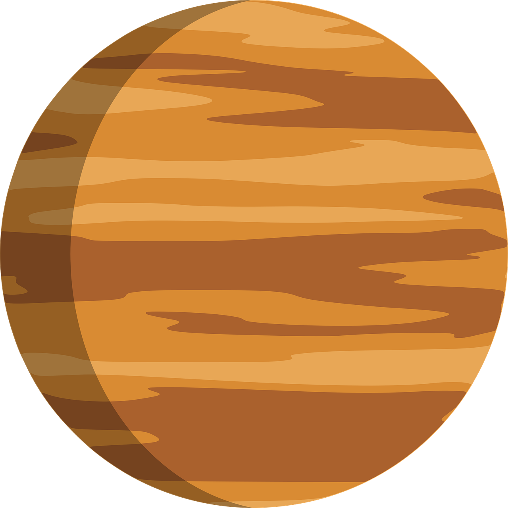

TODO SOBRE VENUS 
Venus es el segundo planeta del sistema solar, ubicado entre Mercurio y la Tierra. A menudo se lo llama “el gemelo de la Tierra” por su tamaño y composición similar, aunque en realidad es un mundo muy distinto y extremo.
Su atmósfera es densa y está compuesta en su mayoría por dióxido de carbono, con nubes de ácido sulfúrico. Esto genera un efecto invernadero descomunal, convirtiéndolo en el planeta más caliente del sistema solar: su temperatura superficial ronda los 470°C, suficiente para derretir plomo. A diferencia de Mercurio, esta atmósfera actúa como una manta que retiene el calor constantemente.
Su rotación también es peculiar: gira muy lentamente y en dirección contraria a la mayoría de los planetas. Un día en Venus (el tiempo que tarda en rotar sobre su eje) dura unos 243 días terrestres, y lo hace “al revés”, lo que significa que el Sol sale por el oeste y se pone por el este.
La presión en la superficie es unas 90 veces mayor que la de la Tierra, similar a lo que sentirías a 900 metros bajo el mar. Su geografía está marcada por vastas llanuras de lava, volcanes posiblemente activos y mesetas elevadas. A pesar de su entorno hostil, hay un enorme interés científico por explorar su historia climática, ya que podría dar pistas sobre el futuro climático de nuestro planeta.
Además, Venus brilla intensamente en el cielo —antes del amanecer o después del atardecer— y por eso fue conocido por antiguas civilizaciones como la Estrella de la Mañana o Estrella Vespertina.